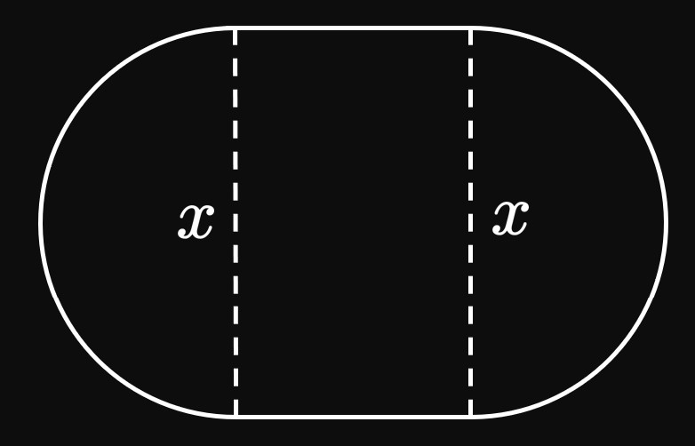

The function
\(C(n) = n^3 + 2n^2 + 4n + 6\)
models the cost, in thousands of dollars, for a company to manufacture \(n\) hundred computers.
Determine the cost for the firm to produce
\(200\) computers
\(400\) computers
For each of exercises 9–11, simplify the difference quotient \([f(x + h) - f(x)]/h,\) where \(h \ne 0,\)
for the given function \(f\).
Avery operates an ice cream truck in which she sells sundaes for \(\$7\) each.
Write a function for Avery's revenue \(R\) as a function of \(s,\) the number of sundaes she sells.
What is the domain of \(R(s)\) in context?
Each month, a cell phone carrier charges a fixed price of \(\$5\)
and a fee of \($0.10\) per minute used, with a limit of \(900\) minutes per month.
Write a function for the monthly cost \(C\) as a function of the number of minutes used, \(m.\)
What is the domain of \(C(m)\) in context?
A computer initially worth \(\$1000\) loses \(20\%\) of its value each year.
Write a function for its value \(V\) as a function of the years \(t\) since its purchase.
Find the domain of \(V(t)\) in context.
A uniform, insulating sphere is charged and has a radius of \(R.\)
The electric field inside the sphere is directly proportional to the distance \(r\) from the sphere's center.
Outside the sphere, the electric field varies inversely with the square of the distance from the sphere's center.
Write a piecewise function to represent this electric field \(E\) as a function of \(r.\)
Then graph the rough shape of \(E(r).\)
The cost \(C\) to mail an envelope varies according to the weight \(w\) (in pounds) of its contents,
as modeled by the function
\[
C(w) =
\bc
0.97 &0 \leq w \leq 1 \nl
1.24 &1 \lt w \leq 2 \nl
1.62 &2 \lt w \leq 3 \nl
1.98 &3 \lt w \leq 4 \pd
\ec
\]
The post office does not use envelopes for packages heavier than \(4\) pounds.
Graph \(C(w).\)
Find the domain of \(C(w).\)
What is the cost of mailing a \(1.8\)-pound book?
What about a \(3\)-pound laptop?
A cell phone plan charges a base rate of \(\$30\) a month,
which includes \(500\) free minutes of usage.
Each additional minute costs \(\$0.10.\)
Express the monthly cost \(C\) as a function of \(x,\)
the number of minutes used.
Then graph \(C(x).\)
A rectangular prism has a square base whose lengths are \(x.\)
If the prism's volume is \(400,\) then express its surface area \(S\) as a function of \(x.\)
Then give the domain in context.
A slot is constructed by connecting two semicircles to two horizontal line segments
(Figure 12).
If the slot's perimeter is \(50,\)
then express its area \(A\) as a function of each semicircle's diameter, \(x.\)
